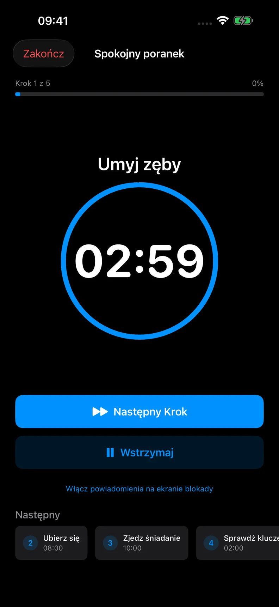
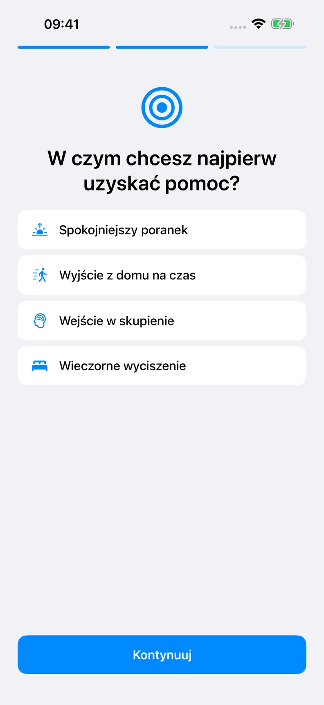
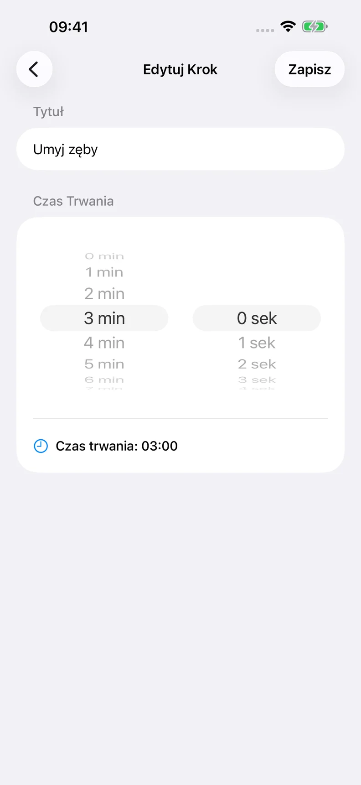

Wybierz punkt wyjścia
Wybierz szablon lub stwórz własną rutynę.
TROCHĘ STRUKTURY NA CO DZIEŃ
Spokojniejszy sposób na codzienność. Zmień poranek, czas skupienia lub wieczór w rutynę, którą możesz realizować krok po kroku.
Zacznij od 3 bezpłatnych rutyn. Opcjonalna subskrypcja Pro.

Twoja rutyna. Twoje tempo.
Jak to działa
Jasne miejsce na kolejny krok.
Wybierz szablon lub stwórz własną rutynę.
Zmień kroki, ich kolejność i czas każdego z nich.
Włącz timer. Zrób przerwę, kiedy potrzebujesz. Przejdź dalej, gdy będziesz gotowy.
ROTINELY
Wybierz, co chcesz sobie ułatwić. Zostaw pomocne kroki i zmień resztę. Może to być coś tak prostego jak wyjście z domu.
Ekrany pokazują przykładowe rutyny.


Bezpłatnie i Pro
Plany miesięczne i roczne znajdziesz w aplikacji w lokalnej walucie. Ewentualny okres próbny i cena po jego zakończeniu są widoczne przed zakupem. Pro odnawia się automatycznie, jeśli nie anulujesz subskrypcji przez Apple.
FAQ
Ty wybierasz moment przejścia do kolejnego kroku. Osiągnięcie zera nie powoduje automatycznej zmiany.
Powiadomienia wymagają zgody. Tryb skupienia, wyciszenie, ustawienia urządzenia i iOS mogą wpływać na dostarczenie i dźwięk. Wskazówki głosowe działają przy otwartej aplikacji, nie są gwarantowanym alarmem w tle.
Synchronizacja iCloud nie jest aktywna w sprawdzonej wersji relaunch. Nie polegaj na niej jako kopii zapasowej ani synchronizacji między urządzeniami.
Nie. Rotinely służy do osobistej organizacji. Nie diagnozuje, nie zapobiega ani nie leczy ADHD lub innych schorzeń i nie zastępuje profesjonalnej opieki.
Zarządzaj subskrypcją w ustawieniach konta Apple. Usunięcie aplikacji nie anuluje subskrypcji.
Wypróbuj rutynę dopasowaną do twojego dnia.
Zobacz w App StoreDostępność i oferty zależą od regionu App Store.